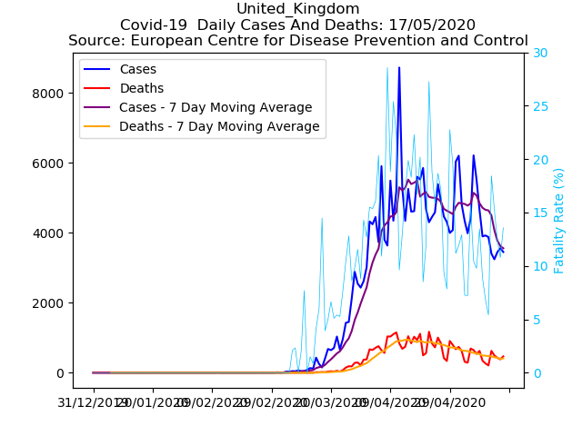

Covid-19 Statistics
Unaligned Results | Aligned Results

Reference :
These graphs have been generated using the public data from : European Centre for Disease Prevention and Control
Python source code to generate these graphs is available here : Edwards Lab, Github. Courtesy of : Edwards Lab, San Diego State University
Copyright © John Edwards 2020.